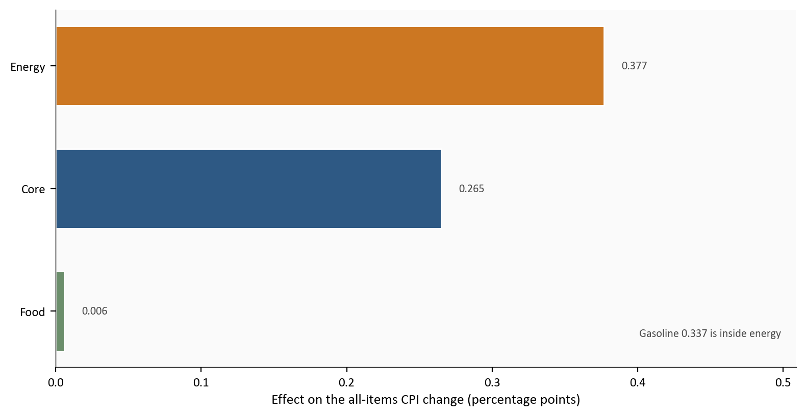
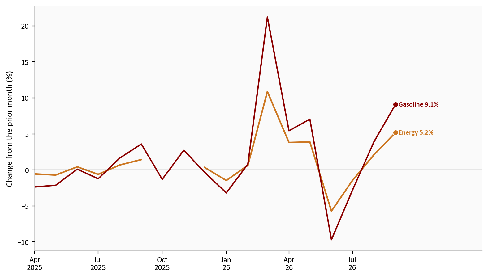
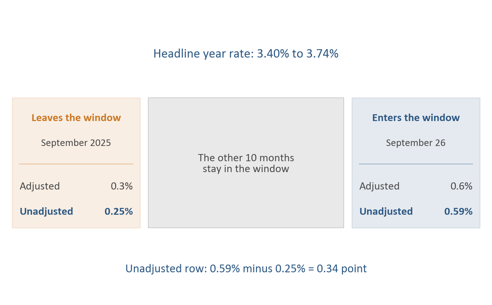
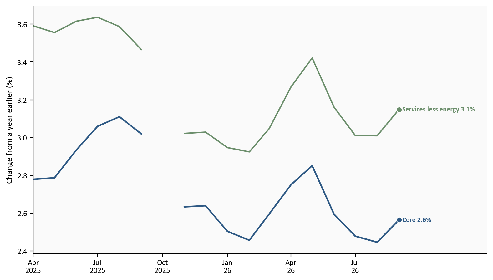
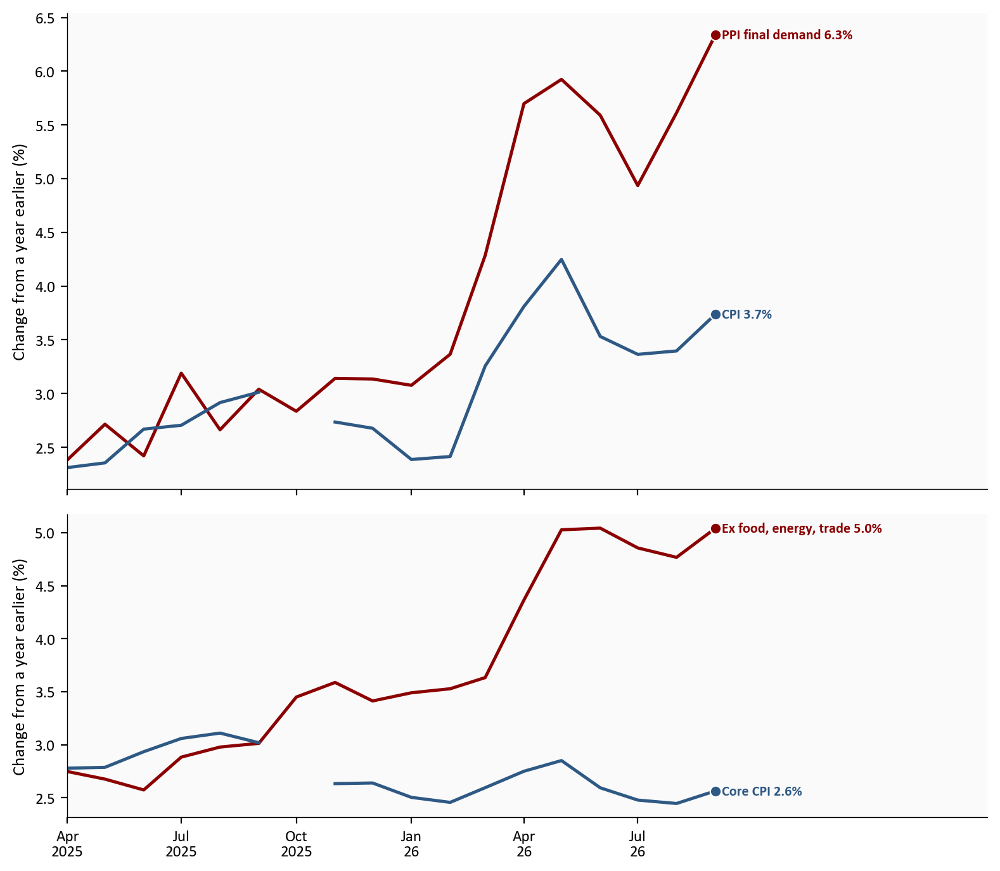

Headline CPI
0.6%
3.7% over the year
Core CPI
2.6%
0.3% on the month
Gasoline
9.1%
more than half the CPI month
PPI final demand
1.3%
6.3% over the year
BLS CPI released 10/14/26. BLS PPI released 10/15/26.
Yoram Gilboa
October 18, 2026
The Consumer Price Index, the index of prices urban households pay, rose 0.6% in September 26 and 3.7% over the year. Gasoline rose 9.1% and accounted for more than half of that monthly increase. The energy index, which also includes household utilities, rose 5.2%.
Producer prices moved further. The Producer Price Index for final demand, the prices producers receive for finished goods and services, rose 1.3% in the month and 6.3% over the year. The month is the largest final-demand advance since 1.7% in March 2022. The year rate is the largest since 6.4% in December 2022.
Core CPI, all items less food and energy, rose 0.3% on the month, the same published pace as August 26, and 2.6% over the year. The next policy statement is 10/28/26 at 2:00 p.m. ET. That meeting does not publish a new Summary of Economic Projections. The federal funds target range is 3.75% to 4.00%.
The complete pipeline is included with this post:
scripts/01_fetch_data.py checks the committed CPI, PPI, and funds-rate snapshots. It does not download. CPI is the 10/14/26 vintage. PPI is the 10/15/26 vintage.scripts/02_clean_data.py calculates the monthly and yearly rates and checks them against the Bureau of Labor Statistics prints. Charts only plot those columns.scripts/04_compute_stats.py writes every prose and card value to stats/summary_stats.json.Run the scripts in that order from this post’s folder, then render index.qmd. pandas handles the tables and matplotlib draws the figures. The source archives are the CPI release and the PPI release.
A month-over-month rate in this post is seasonally adjusted unless the sentence says otherwise. A year rate uses the index that is not seasonally adjusted. Seasonal adjustment is why gasoline can be 9.1% in the news release and 6.5% before adjustment.
The contribution chart uses official effects from BLS Table 6, in percentage points. Food, energy, and core are mutually exclusive. Their effects sum to 0.648, which is 0.6 at one decimal. A fixed-weight cross-check was computed and was not plotted.
FRED has a published hole in 2025-10 for headline, core, and energy. Gasoline has a value that month. The charts keep that hole as a gap. These figures use the 10/14/26 CPI vintage and the 10/15/26 PPI vintage. The PPI release revised earlier months. The charts do not draw the prior publication.
BLS CPI released 10/14/26. BLS PPI released 10/15/26.
A contribution is the part of the monthly CPI change tied to one category. In September 26 the three mutually exclusive pieces are energy, food, and core. Energy’s effect was 0.377 percentage point. Core’s was 0.265. Food’s was 0.006 percentage point. The food index was unchanged on the month and up 2.5% over the year.
Gasoline is inside energy, so it is not drawn as a fourth bar. Its own effect was 0.337 percentage point, 56.2% of the 0.6% all-items increase. That is the Bureau’s “over half” result, read off Table 6 rather than a homemade weight.
# One idea: where the September CPI month came from.
# Effects are the official Table 6 values carried in the clean file.
# This cell only plots those columns.
bars = contributions[contributions["plot"] == 1].set_index("label").loc[["Food", "Core", "Energy"]]
gas = contributions.loc[contributions["component"] == "gasoline"].iloc[0]
bar_colors = [COLORS["secondary"], COLORS["primary"], COLORS["warning"]]
fig, ax = plt.subplots(figsize=(8.0, 4.2))
ax.barh(bars.index, bars["effect_pp"], color=bar_colors, edgecolor="white", height=0.65)
for label, value in bars["effect_pp"].items():
ax.text(value + 0.012, label, f"{value:.3f}", va="center", ha="left", fontsize=8, color=COLORS["neutral"])
ax.axvline(0, color=COLORS["neutral"], linewidth=0.8)
ax.set_xlabel("Effect on the all-items CPI change (percentage points)")
ax.set_xlim(0, bars["effect_pp"].max() * 1.35)
ax.text(
0.98,
0.08,
f"Gasoline {gas['effect_pp']:.3f} is inside energy",
transform=ax.transAxes,
ha="right",
va="bottom",
fontsize=8,
color=COLORS["neutral"],
)
plt.tight_layout()
fig.savefig(IMG_DIR / "september-cpi-contributions.png", dpi=150, bbox_inches="tight")
The bars end in September 26. They are one month, not a history.
Source: Bureau of Labor Statistics, CPI Table 6 for September 26, archived release.
Energy rose 5.2% after 2.1% in August 26. Gasoline rose 9.1% on a seasonally adjusted basis. Before adjustment the gasoline index rose 6.5%. The chart uses the adjusted rates, because those are the monthly prints in the release.
Over the year, energy was 20.4% higher and gasoline was 34.2% higher. September 26 was a second increase, not a spike after a decline. August 26 had already turned up.
# Energy and gasoline month changes. The 2025-10 hole in energy is left empty.
energy = monthly_calendar(cpi, ["energy_mom", "gasoline_mom"])
fig, ax = plt.subplots(figsize=(8.0, 4.6))
ax.plot(energy.index, energy["energy_mom"], color=COLORS["warning"], linewidth=1.8)
ax.plot(energy.index, energy["gasoline_mom"], color=COLORS["accent"], linewidth=1.6)
ax.axhline(0, color=COLORS["neutral"], linewidth=0.8)
label_end(ax, energy["energy_mom"], COLORS["warning"], "Energy")
label_end(ax, energy["gasoline_mom"], COLORS["accent"], "Gasoline")
extend_xlim(ax, energy.index)
quarter_ticks(ax, energy.index)
ax.set_ylabel("Change from the prior month (%)")
plt.tight_layout()
fig.savefig(IMG_DIR / "energy-gasoline-mom.png", dpi=150, bbox_inches="tight")
Both lines end in September 26. The break in the energy line at 2025-10 is a missing FRED month, not a price of zero.
Source: Bureau of Labor Statistics via FRED, CPIENGSL and CUSR0000SETB01. Monthly rates are seasonally adjusted.
The core year rate is the number this section is about. It is the change in core CPI, the index without food and energy, over the past twelve months. It rose from 2.4% to 2.6%. The core month did not speed up. Core CPI rose 0.3% in September 26 and 0.3% in August 26.
A year rate is a window of twelve months. The new month enters on the right, and the same month from a year earlier leaves on the left. The year rate changes by the entering month minus the leaving month. Figure 3 draws that step for headline CPI, where the subtraction can be checked on the page. Core CPI uses the same kind of window.
Each box has two readings of the same month. Adjusted is the seasonally adjusted rate in the news release. Unadjusted is the rate the year rate actually uses. Read the bold unadjusted row, left box then right box.
# Two readings in each end box. The year rate uses the unadjusted row.
fig, ax = plt.subplots(figsize=(8.0, 5.0))
ax.set_xlim(0, 12)
ax.set_ylim(0, 6.4)
ax.axis("off")
def month_box(x, role, month, adjusted, unadjusted, edge):
ax.add_patch(plt.Rectangle((x, 1.55), 3.2, 2.85, facecolor=edge, alpha=0.12, edgecolor=edge, linewidth=1.15))
ax.text(x + 1.6, 3.95, role, ha="center", va="center", fontsize=13, color=edge, fontweight="bold")
ax.text(x + 1.6, 3.4, month, ha="center", va="center", fontsize=12, color=COLORS["neutral"])
ax.plot([x + 0.18, x + 3.02], [2.95, 2.95], color=edge, linewidth=0.6, alpha=0.6)
ax.text(x + 0.18, 2.45, "Adjusted", ha="left", va="center", fontsize=13, color=COLORS["neutral"])
ax.text(x + 3.02, 2.45, adjusted, ha="right", va="center", fontsize=13, color=COLORS["neutral"])
ax.text(x + 0.18, 1.9, "Unadjusted", ha="left", va="center", fontsize=13, color=COLORS["primary"], fontweight="bold")
ax.text(x + 3.02, 1.9, unadjusted, ha="right", va="center", fontsize=13, color=COLORS["primary"], fontweight="bold")
month_box(
0.15,
"Leaves the window",
stats["dropout_month"],
f"{fmt(stats['headline_dropout_sa_mom'])}%",
f"{fmt2(stats['headline_dropout_mom_hundredths'])}%",
COLORS["warning"],
)
ax.add_patch(plt.Rectangle((3.55, 1.55), 4.9, 2.85, facecolor=COLORS["light"], alpha=0.28, edgecolor=COLORS["neutral"], linewidth=0.7))
ax.text(6.0, 2.95, "The other 10 months\nstay in the window", ha="center", va="center", fontsize=13, color=COLORS["neutral"])
month_box(
8.65,
"Enters the window",
stats["latest_month"],
f"{fmt(stats['headline_mom'])}%",
f"{fmt2(stats['headline_mom_hundredths'])}%",
COLORS["primary"],
)
ax.text(
6.0,
5.35,
f"Headline year rate: {fmt2(stats['headline_yoy_prior_hundredths'])}% to {fmt2(stats['headline_yoy_hundredths'])}%",
ha="center",
va="center",
fontsize=15,
color=COLORS["primary"],
)
ax.text(
6.0,
0.65,
f"Unadjusted row: {fmt2(stats['headline_mom_hundredths'])}% minus {fmt2(stats['headline_dropout_mom_hundredths'])}% = {fmt2(stats['headline_yoy_change_pp'])} point",
ha="center",
va="center",
fontsize=14,
color=COLORS["primary"],
)
plt.tight_layout()
fig.savefig(IMG_DIR / "year-rate-window.png", dpi=150, bbox_inches="tight")
Source: Bureau of Labor Statistics via FRED, CPIAUCSL and CPIAUCNS. The adjusted row is seasonally adjusted. The unadjusted row is not.
In Figure 3, 0.59% minus 0.25% is 0.34 point. That is the move from 3.40% to 3.74%. The adjusted 0.6% in the right box is the headline figure in the CPI release. It is not the number the year rate subtracts. Core CPI takes the same step. At two decimals its year rate went from 2.45% to 2.56%.
From January 26 through August 26, the lowest core year rate was 2.4% in August 26. September 26 is above that low and below the high of 2.9% in May 26.
Services less energy services are the services in the CPI with household energy services removed. They are not core CPI. That year rate was 3.1% in September 26. The low since January 26 was 2.9% in February 26, and the high was 3.4% in May 26.
In the next figure, the blue line is the core year rate and the green line is services less energy. Shelter is not a line on that figure. Shelter rose 0.4% on the month after 0.3%, and 3.2% over the year. It does not reverse on the gasoline timetable.
The Federal Reserve’s two goals are stable prices and maximum employment. This post is the price side only. A same-month rise in consumer energy prices and producer energy prices is co-movement. It is not a measured lag from the producer index to the checkout.
# Year rates, not month rates. Services less energy is not core CPI.
core_path = monthly_calendar(cpi, ["core_yoy", "services_yoy"])
fig, ax = plt.subplots(figsize=(8.0, 4.6))
ax.plot(core_path.index, core_path["core_yoy"], color=COLORS["primary"], linewidth=1.8)
ax.plot(core_path.index, core_path["services_yoy"], color=COLORS["secondary"], linewidth=1.6)
label_end(ax, core_path["core_yoy"], COLORS["primary"], "Core")
label_end(ax, core_path["services_yoy"], COLORS["secondary"], "Services less energy")
extend_xlim(ax, core_path.index)
quarter_ticks(ax, core_path.index)
ax.set_ylabel("Change from a year earlier (%)")
plt.tight_layout()
fig.savefig(IMG_DIR / "core-services-yoy.png", dpi=150, bbox_inches="tight")
The lines end in September 26. A later CPI release is not a point on this figure.
Source: Bureau of Labor Statistics via FRED, CPILFENS and CUUR0000SASLE. Year rates are not seasonally adjusted.
Final demand rose 1.3% after 0.5% in August 26 and 0.2% in July 26. Goods rose 2.6%, the largest increase since the goods index began in December 2009. Over 80% of that goods increase was final-demand energy, which rose 10.8%. Producer prices for gasoline rose 20.3% and accounted for half of the goods increase. Foods rose 1.2%. Goods less foods and energy rose 0.3%. Services rose 0.8%, so the month was not only a goods story.
The household gasoline index and the producer gasoline index are different objects. CPI gasoline rose 9.1%. PPI gasoline rose 20.3%. Margins for automotive fuels and lubricants retailing fell 30.3%. A margin is not a price at the pump, and this post does not turn one print into the other.
The leftover on the producer side is also a different basket from core CPI. Final demand less foods, energy, and trade services rose 0.5% after 0.3% in August 26, and 5.0% over the year. Core CPI’s year rate was 2.6%. Putting those two year rates on one chart does not estimate how many months producer prices take to reach consumers. It shows that stripping food, energy, and trade margins still leaves a much hotter producer year rate.
# Two panels, one idea each. Top is the headline pair. Bottom is the stripped pair.
compare = monthly_calendar(ppi_cpi, ["ppi_fd_yoy", "headline_yoy", "ppi_x_yoy", "core_yoy"])
fig, axes = plt.subplots(2, 1, figsize=(8.0, 7.0), sharex=True, gridspec_kw={"height_ratios": [2.2, 1.4]})
axes[0].plot(compare.index, compare["ppi_fd_yoy"], color=COLORS["accent"], linewidth=1.8)
axes[0].plot(compare.index, compare["headline_yoy"], color=COLORS["primary"], linewidth=1.8)
label_end(axes[0], compare["ppi_fd_yoy"], COLORS["accent"], "PPI final demand")
label_end(axes[0], compare["headline_yoy"], COLORS["primary"], "CPI")
axes[0].set_ylabel("Change from a year earlier (%)")
axes[1].plot(compare.index, compare["ppi_x_yoy"], color=COLORS["accent"], linewidth=1.8)
axes[1].plot(compare.index, compare["core_yoy"], color=COLORS["primary"], linewidth=1.8)
label_end(axes[1], compare["ppi_x_yoy"], COLORS["accent"], "Ex food, energy, trade")
label_end(axes[1], compare["core_yoy"], COLORS["primary"], "Core CPI")
axes[1].set_ylabel("Change from a year earlier (%)")
extend_xlim(axes[1], compare.index, pad=0.42)
quarter_ticks(axes[1], compare.index)
plt.tight_layout()
fig.savefig(IMG_DIR / "ppi-cpi-yoy.png", dpi=150, bbox_inches="tight")
Both panels end in September 26.
Source: Bureau of Labor Statistics via FRED, PPIFID, CPIAUCNS, WPUFD49116, and CPILFENS. Year rates are not seasonally adjusted.
Three facts sit next to each other, and they are not the same fact. Gasoline was more than half of the CPI month, which is the household bill. Producer gasoline rose 20.3% while retail fuel margins fell 30.3%, so the pump price and the producer price are two readings of one shock, not one number passed through. Core CPI’s month stayed at 0.3%, and its year rate still rose because September 2025 left the twelve-month window in Figure 3. After food, energy, and trade margins are removed, producer prices are still 5.0% over the year, against a core CPI year rate of 2.6%.
The 10/28/26 statement comes before the September 26 PCE price index and the advance estimate of third-quarter GDP, both on 10/29/26. That statement does not include new projections. PCE is the price index the Fed uses for its inflation goal, and it is outside this release.
For the Fed: The 10/28/26 decision does not update the dot plot. The price facts already in hand are a hotter CPI headline, a higher core year rate, and a producer index that stays hot after food, energy, and trade margins are removed. This post does not say which way the committee will vote.
For households: Gasoline was 34.2% higher than a year earlier. Shelter was still up 3.2% over the year, and a later drop in gasoline would not unwind that increase.
For investors: PPI final demand, at 6.3% over the year, and core CPI, at 2.6%, are different baskets.
The FOMC statement is 10/28/26 at 2:00 p.m. ET. There is no Summary of Economic Projections at that meeting.
The advance estimate of third-quarter GDP and the September PCE price index are both scheduled for 10/29/26.
The next CPI release is 11/10/26 at 8:30 a.m. ET.
Energy is volatile, and one more hot month does not fix the path. Seasonal adjustment changes the gasoline month from 6.5% to 9.1%. The contribution bars are official Table 6 effects. The three plotted effects do not add to 0.6 at three decimals. They do at one decimal. The charts stop at September 26. A later revision is a new evaluation of these months.
| Series | What it measures | Source |
|---|---|---|
| CPIAUCSL, CPIAUCNS | Headline CPI, monthly and yearly | FRED |
| CPILFESL, CPILFENS | Core CPI | FRED |
| CPIENGSL, CPIENGNS | Energy CPI | FRED |
| CUSR0000SETB01, CUUR0000SETB01 | Gasoline | FRED |
| CPIUFDSL, CPIUFDNS | Food | FRED |
| CUSR0000SAH1, CUUR0000SAH1 | Shelter | FRED |
| CUSR0000SASLE, CUUR0000SASLE | Services less energy services | FRED |
| PPIFIS, PPIFID | PPI final demand | FRED |
| PPIDGS, PPIDSS, PPIDES, PPIDFS, WPSFD413 | PPI goods, services, energy, foods, and goods less food and energy | FRED |
| WPSFD49116, WPUFD49116 | PPI less foods, energy, and trade services | FRED |
| CPI Table 6 | September contribution effects | BLS archive |
| PPI news release | Producer gasoline and retail fuel margins | BLS archive |
September’s CPI month was an energy month, and gasoline was more than half of it. Producer prices rose by more, and the producer index that drops food, energy, and trade margins does not match core CPI. The next policy statement will not come with new projections. The price index the Fed prefers is published the next day.
Data current as of 10/15/26. Figures use the CPI vintage of 10/14/26 and the PPI vintage of 10/15/26.